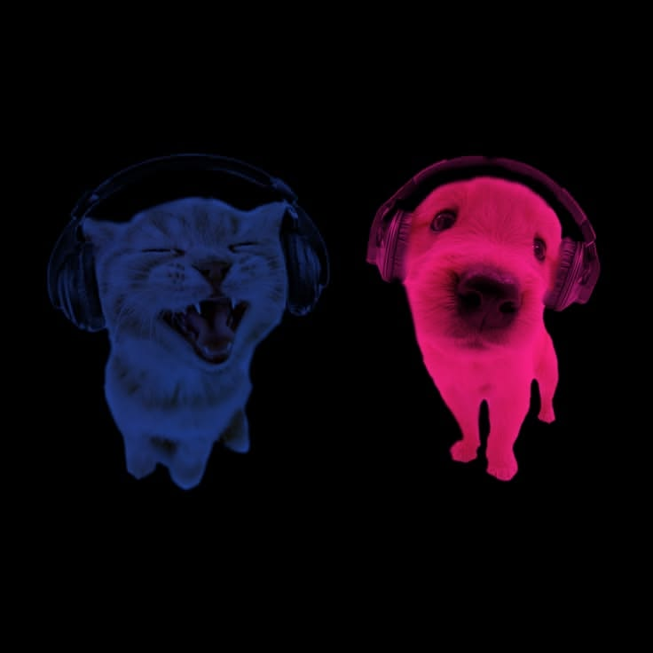

Hi, I'm a
Web Development Enthusiast
Perkenalkan, nama saya Luhur Nugroho Ardiansyah, biasa dipanggil Zidan. Saya adalah mahasiswa Teknologi Informasi dari
Universitas Merdeka Malang yang memiliki ketertarikan pada pengembangan website bisnis, mulai dari
perancangan arsitektur sistem, desain antarmuka pengguna, hingga pengembangan aplikasi berbasis web.
Saat ini saya terus mengembangkan kemampuan melalui berbagai proyek pribadi sebagai bagian dari proses
belajar dan pengembangan diri di bidang yang saya tekuni. Saya percaya bahwa sebuah produk digital yang
baik tidak hanya dibangun dengan kode, tetapi juga melalui perencanaan yang matang dan pengalaman pengguna
yang nyaman.